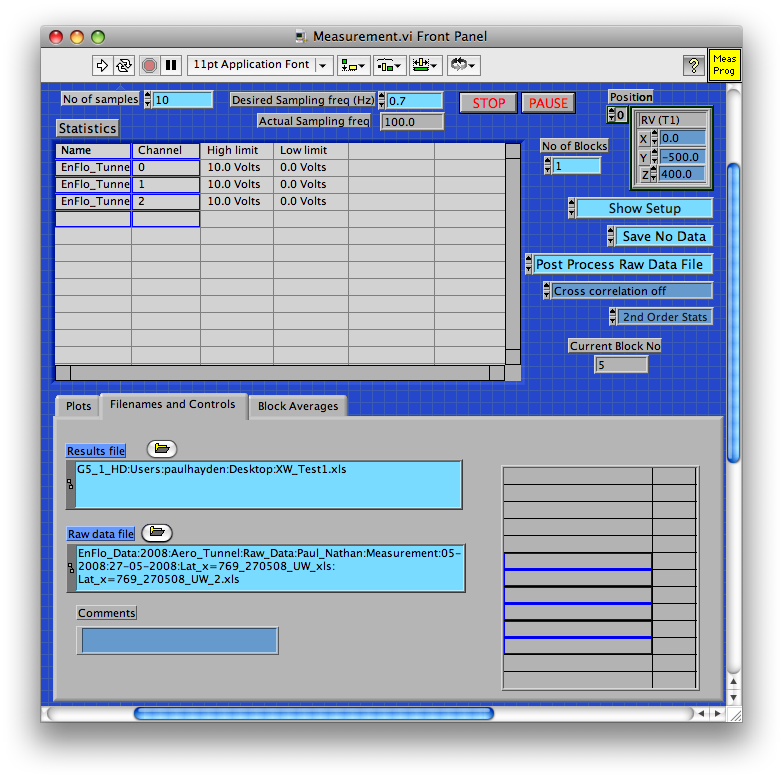
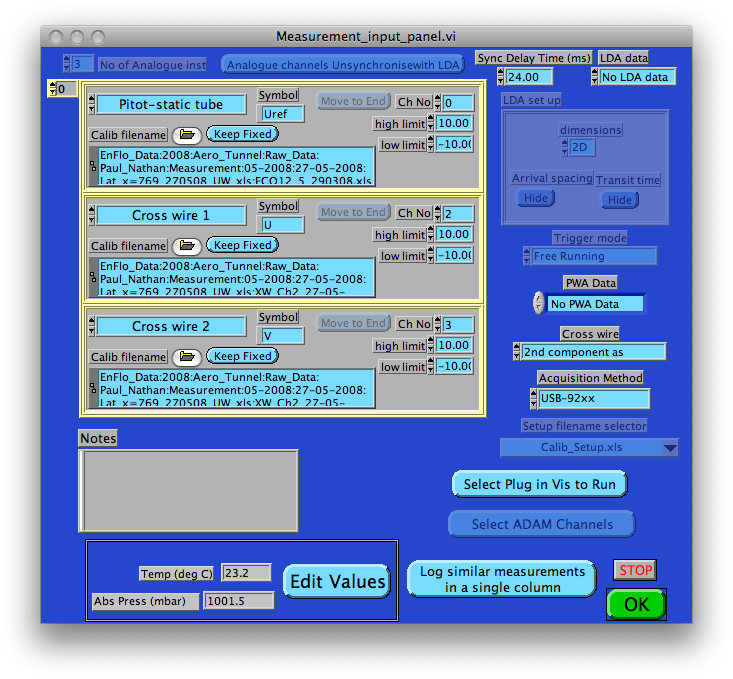
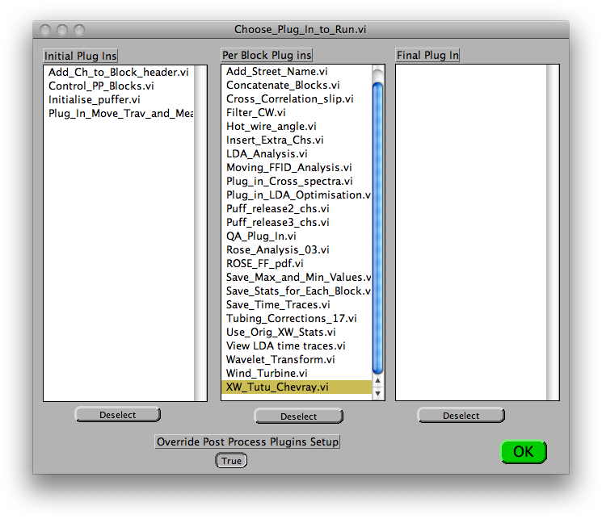
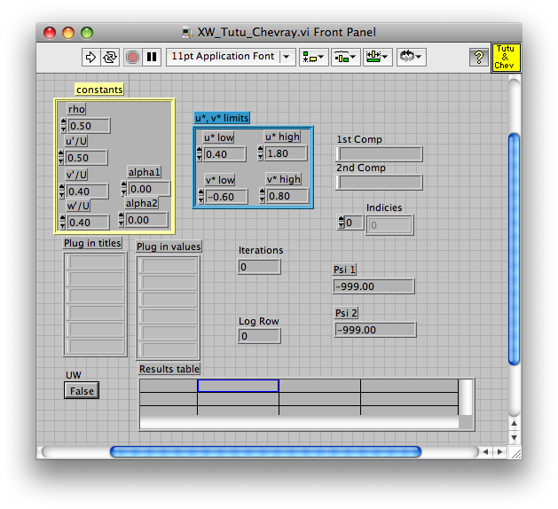

|
Step 1Open the measurement program, if not open you can use the EnFlo Hub to open it Set program to Show Setup the click the run arrow |
|
Step 2The Measurement setup panel should now be showing Click on the Select Plug in Vis to Run button |
|
Step 3
The Choose_Plug_In_to_Run.vi dialog should now be displayed Select the plug in you want to run for example XW_Tutu_Chevray.vi and if you are post processessing you need to set the Override Post Process Plugins Setup to true. The click OK. |
|
Step 4The plug in XW_TuTu_Chevray.vi should now appear in the background, but you need to press OK on the measurement setup panel to complete the measurement setup process.  |
|
Step 5The Measurement setup panel should still be in the forground Click on the OK button, to complete the measurement setup. When you run the measuremnent program now the plugin(s) that you have selected should also run |